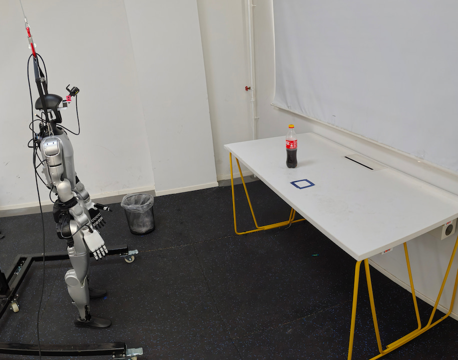
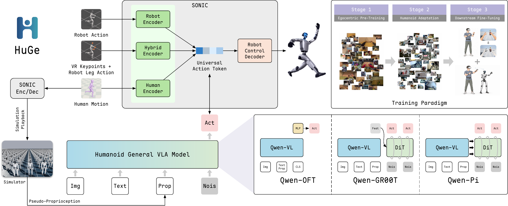

STAGE 011,669.61 h
Egocentric
pre-training
Learn from human demonstrations and simulated robot experience, with SONIC actions and reconstructed robot states.
EgoDex · EgoVerse · Xperience-10M · BEHAVIOR-1K
Learning from egocentric experience—first through large-scale pre-training, then through task-specific adaptation.

Everyday human activity offers a rich source of experience. How can a humanoid learn from it?
Robot demonstrations are expensive to collect, especially when a task requires coordinated movement of the entire body. Egocentric human recordings offer scale, but humans and robots look different—and human video does not directly provide robot proprioception.
We investigate two roles for egocentric data. First, we refine a pre-training recipe through training-strategy, pseudo-proprioception, and data-scale studies. We then compare the complete recipe against existing baselines. Finally, we study how task-specific human demonstrations and visual adaptation support downstream fine-tuning on a real humanoid.
Three representative VLA architectures.
A shared path from perception to action.

Learn from human demonstrations and simulated robot experience, with SONIC actions and reconstructed robot states.
EgoDex · EgoVerse · Xperience-10M · BEHAVIOR-1K
Adapt to real robot observations and proprioceptive states using whole-body G1 demonstrations.
Humanoid Everyday · UniFoLM-WBT · HIW-500
Specialize for simulation and real-world tasks, including visually adapted human demonstrations for cola pick-and-drop.
HumanoidArena · Real-world cola task
THREE ARCHITECTURES, ONE FAMILY
An MLP predicts continuous action chunks from action-token hidden states.
An action transformer generates motion conditioned on vision-language features.
A flow-matching action expert attends to multiple backbone layers.
Qwen3-VL-2B-Instruct64-D motion token + 2 hand controls34-D proprioception50-step chunks at 50 Hz
First establish how to train. Then ask what human experience should contain—and what happens as it grows.
Shared evaluation: one multi-task policy per variant, 100 demonstrations per task, and 60 evaluation episodes per task across three seed groups of 20. Success rates are unweighted averages over seven HumanoidArena tasks.
Before introducing egocentric pre-training, we compare Frozen, LoRA, and Full training on HumanoidArena. Each starts from the pre-trained Qwen3-VL backbone.
Full fine-tuning wins across all three variants. It exceeds LoRA by 19.29–38.81 percentage points, so we adopt Full in the following experiments.
| Variant | Frozen | LoRA | Full |
|---|---|---|---|
| HuGe-OFT | 0.00 | 16.19 | 55.00 |
| HuGe-GR00T | 24.05 | 34.05 | 58.33 |
| HuGe-Pi | 30.24 | 40.95 | 60.24 |
The action modules are trained in every setting. The low-level SONIC controller remains fixed.
With Full selected, what should ego data provide?Human video does not contain the corresponding robot proprioception. Simulated G1 playback reconstructs a 34-dimensional state to accompany egocentric demonstrations.
We vary whether these states are provided during egocentric pre-training, then evaluate downstream control with robot-state inputs.
Robot-state context helps GR00T and Pi. OFT declines; the paper associates this with truncation of its textual state representation.
| Variant | Without | With | Change |
|---|---|---|---|
| HuGe-OFT | 56.43 | 54.05 | −2.38 pp |
| HuGe-GR00T | 61.67 | 66.67 | +5.00 pp |
| HuGe-Pi | 62.14 | 65.00 | +2.86 pp |
61.67 → 78.33%HuGe-GR00T
68.33 → 83.33%HuGe-Pi
We compare no HuGe pre-training, 10% of the egocentric pre-training corpus, and the full corpus, measuring transfer to downstream humanoid control.
HuGe-GR00T and HuGe-Pi improve at each evaluated scale. With the full corpus, they reach 66.67% and 65.00% average success.
More egocentric experience benefits the two flow-matching variants. OFT falls at the largest scale, consistent with the textual-state truncation issue.
These are observed trends at three evaluated scales; the study does not fit a mathematical scaling law.
| Variant | No pre-train. | 10% | 100% |
|---|---|---|---|
| HuGe-OFT | 55.00 | 55.67 | 54.05 |
| HuGe-GR00T | 58.33 | 64.05 | 66.67 |
| HuGe-Pi | 60.24 | 62.14 | 65.00 |
Full fine-tuning · pseudo-proprioceptive pre-training · full egocentric corpus
Building on the three investigations, we compare HuGe with existing policies across seven HumanoidArena tasks.
HuGe-GR00T
+12.86 percentage points over the strongest listed baseline, π0.5.
HuGe-Pi reaches 65.00%. One multi-task policy per variant is evaluated across seven tasks.
100 training demonstrations per task. 60 evaluation episodes per task: three seed groups of 20. Overall is the unweighted mean across seven tasks.
Unweighted average across all 7 tasks
HuGe models Baselines † Reported by HumanoidArena
| Model | Football | DoubleDesk | P&PBox | OpenDoor | SitSofa | Boxing | VisNavi | Overall |
|---|---|---|---|---|---|---|---|---|
| ACT † | 20.00 | 30.00 | 60.00 | 58.30 | 21.70 | 58.30 | 28.30 | 39.51 |
| DP † | 53.30 | 35.00 | 0.00 | 83.30 | 83.30 | 21.70 | 50.00 | 46.66 |
| FM † | 21.70 | 20.00 | 0.00 | 76.70 | 48.30 | 18.30 | 38.30 | 31.90 |
| π0.5 † | 10.00 | 30.00 | 75.00 | 85.00 | 70.00 | 71.70 | 35.00 | 53.81 |
| GR00T (scratch) | 0.00 | 0.00 | 75.00 | 11.67 | 13.33 | 68.33 | 36.67 | 29.29 |
| GR00T (N1.7) | 13.33 | 0.00 | 76.67 | 8.33 | 75.00 | 11.67 | 26.67 | 30.24 |
| HuGe-OFT | 48.33 | 0.00 | 53.33 | 75.00 | 55.00 | 73.33 | 73.33 | 54.05 |
| HuGe-GR00T | 71.67 | 15.00 | 81.67 | 95.00 | 78.33 | 68.33 | 56.67 | 66.67 |
| HuGe-Pi | 63.33 | 11.67 | 76.67 | 88.33 | 83.33 | 68.33 | 63.33 | 65.00 |
Performance varies by task: DoubleDesk remains challenging for all HuGe variants (0–15% success). HOI comprises Football, DoubleDesk, and P&PBox; HSI comprises the remaining four tasks.
Pre-training builds transferable experience. Can task-specific human demonstrations also help when real robot data is limited?
We move to a real Unitree G1, hold the robot budget at 110 demonstrations, and add 400 human demonstrations of cola pick-and-drop. First, we study the visual gap. Then, we measure full-task success.
Human hands become robot hands. The task, motion, and supervision stay aligned.
For downstream cola pick-and-drop, visual adaptation inpaints human arms and hands and composites rendered robotic counterparts, while preserving actions, states, and language.
Paired frames from the visual adaptation figure in the paper.
2.0311 1.3499
33.54% lower7.5697 5.5204
27.07% lower305.5143 263.2697
13.83% lowerRaw → visually adapted ego observations. Distances decrease within all three feature spaces; their absolute scales differ.
“Walk forward, grab the cola
and throw into the trash bin”
With 110 robot demonstrations held fixed, adding 400 human demonstrations improves HuGe-Pi on a whole-body pick-and-drop task. Visually adapting those human observations adds two successful trials out of 30.
30 trials per condition · randomized bottle placement · HuGe-Pi only
The two augmented conditions use the same 400 human demonstrations, with raw or adapted visuals.
From a knocked-over bottle to different tabletop placements: three real-world rollouts reveal how the policy adapts and coordinates its body.
“Walk forward, grab the cola and throw into the trash bin”
HuGe-Pi · Unitree G1The bottle is deliberately knocked over during grasping—a perturbation absent from fine-tuning data. The robot re-grasps it and completes the task.
Bottle tips → re-grasp → successful drop
At one tabletop placement, the robot approaches, picks up the bottle, and turns toward the bin. Compare its approach and reach with the next rollout.
Approach → reach and grasp → turn
With the bottle at another tabletop position, the robot links pickup, transport, crouching, and release through coordinated arm and lower-body motion.
Carry the bottle → crouch → release
These rollouts provide qualitative evidence of adaptation to an object disturbance and spatial generalization across the evaluated bottle placements. Reported success rates use 30 evaluation trials per data configuration.
If HuGe supports your research,
please consider citing our work.
@misc{liu2026huge,
title = {HuGe: Scaling Humanoid Generalist
Vision-Language-Action Models with
Egocentric Experience},
author = {Liu, Yang and Liu, Jiacheng and Li, Hengtao
and Huang, Yuheng and Yang, Zijian and Dai, Ji
and Wang, Maoxin and Gao, Yi and Wang, Qishen
and Yin, Baohua and Li, Peiyang and Bai, Shuanghao
and Sun, Mingyang and Ding, Pengxiang
and Yin, Jianqin and Yang, Lixin and Wang, Donglin},
year = {2026},
eprint = {xxxx.xxxxx},
archivePrefix = {arXiv},
primaryClass = {},
url = {https://arxiv.org/abs/xxxx.xxxxx}
}